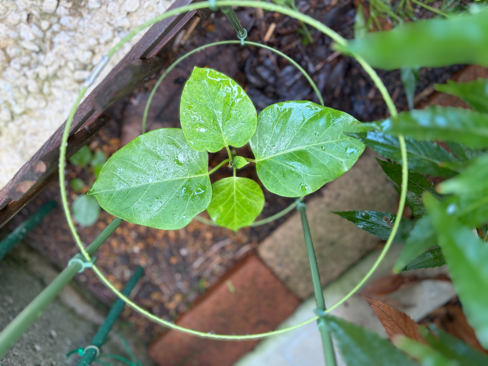

フジバカマが茂り、キジョランが日陰になってしまいました
9月5日のキジョランです。前回の8月2日から34日がたちました。
5月31日には、生育を促そうと、これまでより日当たりを確保できる場所へ移しました。その後、6月から7月にかけて大きな葉が広がり、これからさらに育ってくれることを楽しみにしていました。
ところが、夏の間に周囲のフジバカマ原種系が旺盛に茂り、キジョランの場所が陰になってしまいました。せっかく日当たりを考えて移したものの、周りの植物が大きくなるにつれて光が届きにくくなり、キジョランの成長も止まってしまいました。
今回は、大きな葉を残しながらも、つるが伸びたり、葉が次々と増えたりする姿にはなっていません。中央には小さな葉が見えますが、株全体としては成長が停滞した状態です。

花壇全体の勢いが、小さなキジョランを覆うほどに
9月2日の花壇は、株同士の葉が重なり、地面がほとんど見えないほど茂っていました。上から眺めると、花壇全体が大きな緑のかたまりのようになっています。
フジバカマ原種系も、茎が高く伸びるだけでなく、葉を付けた枝が横へ広がりました。周囲の株とも重なり合い、小さなキジョランのすぐ近くまで緑が迫っています。
花壇全体がよく育つことはうれしいのですが、背の低いキジョランにとっては、周りの茂りが日差しを遮ることになりました。上の方の葉には光が当たっていても、その下にある小さな株まで十分に届くとは限らないのだと感じます。
植えたときの株の大きさや、その時点の日当たりだけでなく、夏に周囲がどこまで茂るかも考えておく必要がありました。今年は、その見通しが十分ではありませんでした。
8月2日よりも、葉の重なりが少なく見えます
8月2日は、左右の大きな葉のほか、手前や奥、下側にも葉が重なっていました。葉の大きさや色には違いがありましたが、株の中心を囲むように緑が広がっていました。
今回は、左右の大きな葉と、上側の少し小さな葉、下側の黄緑色の葉が見えます。その中央に、小さな緑色の葉が顔を出しています。
前回に比べると、葉の間に空間があり、中央の茎や葉柄が見えやすくなっています。葉が重なって厚みを感じる姿から、少しすっきりした姿へ変わったように見えます。
ただし、撮影する向きや距離は異なるため、見える枚数の違いだけで、何枚落ちたのかまでは決められません。今回の姿としては、葉の重なりが少なく、株全体のボリュームも増えていないことが気になります。
左右の大きな葉は、形を保っています
左右には、丸みのある幅広い葉が広がっています。中央から伸びる葉柄がそれぞれの葉を支え、株の横幅を作っています。
葉の付け根から先端へ太い葉脈が走り、その左右に細かな筋が伸びています。葉の表面は濡れていて光沢があり、葉脈の間でも光の反射の仕方が違って見えます。
見える範囲では、大きく抜けた穴や、広い茶色の枯れ込みは目立ちません。葉の縁には多少の起伏がありますが、広い葉面と丸みのある輪郭は保たれています。
成長が止まってしまった中でも、こうして大きな葉が残っていることは、引き続き見守りたいところです。ただ、葉が残っていることと、新しい葉やつるが勢いよく伸びることは別で、今は後者の動きが目立ちません。
上側と下側の葉には、黄緑色が見られます
上側の葉は、左右の葉より小さく、先端を上へ向けています。明るい緑から黄緑色の濃淡があり、葉脈の間にまだらな色合いが見られます。
下側の葉は、さらに黄緑色が目立ちます。中央の葉脈から左右へ分かれる筋に緑色が残り、周囲の明るい部分との違いが分かります。
8月2日にも明るい黄緑色の葉はありましたが、今回は葉の重なりが少ないため、下側の一枚の色が目に入りやすくなっています。
周囲の陰になって成長が停滞したことに加え、この葉色の変化も気になります。ただ、黄緑色になっている理由まで、日陰だけで説明できるとは限りません。葉の古さやほかの条件も含め、今後の変化を見ていきたいと思います。
中央には、小さな緑の葉があります
大きな葉の付け根が集まる中央には、小さな緑色の葉が見えます。周囲の葉に比べるとごく小さいものの、葉身が開き、細かな葉脈も分かる姿です。
8月2日は、中央に白っぽい淡い色の芽があり、まだ十分に開いていませんでした。今回は緑の小さな葉が見えるため、その部分には目が向きます。
ただし、前回の芽と今回の葉が同じものかは、はっきりとは分かりません。また、小さな葉が一枚見られることだけで、株全体の成長が再び勢いづいたとは言えません。
大きく伸びる動きが止まっている中で、中央に小さな葉があることを、今の姿として残しておきます。この葉がさらに広がるのか、それとも小さなままなのかも、これから気を付けて見たいところです。
大きな葉の重なりが少なく見える一方で、こうした小さな葉も見られます。株全体の見た目だけでなく、中央の動きも続けて見ていきたいと思います。
つるは伸びず、支柱の中に収まったままです
株の周りには、円形の緑の支柱があります。今回もその内側に葉がまとまり、長いつるが輪や支柱に巻き付く姿は見られません。
日当たりの良い場所へ移した後は、葉が大きくなり、その先につるも伸びてくれることを期待していました。しかし、周囲が茂って陰になるにつれて、その後の伸びが止まり、コンパクトな姿のままになっています。
支柱を用意するだけではなく、そこへ向かって育つための日当たりも保たなければならないのだと感じました。周りの植物の勢いに埋もれないよう、キジョランの高さから見た環境を考えることも大切でした。
来年は、近くのフジバカマを摘心して工夫したいと思います
来年は、キジョランに近いフジバカマ原種系を摘心し、背丈や茂り方を調整したいと思います。周りが大きくなりすぎてから気付くのではなく、伸びていく途中で、キジョランに光が届いているかを見ながら手を入れたいです。
フジバカマを育てる楽しみも大切にしながら、そのすぐ近くで育つキジョランの日当たりも確保したいと思います。花壇全体を同じように管理するのではなく、キジョランに近い部分を意識して調整することが、来年の工夫になりそうです。
摘心した後も枝葉が広がる様子を見ながら、再び陰になっていないか確かめたいと思います。単に背を低くするだけでなく、横へ伸びる枝や葉が光を遮っていないかも見ていきたいところです。
今年は日当たりを求めて場所を移したものの、その後の周囲の成長まで十分に考えられていませんでした。この経験を、来年の花壇づくりに生かしたいと思います。
花や蕾はまだなく、日当たりの確保が課題です
9月5日の見える範囲には、開いた花や、花の蕾と分かるものはありません。中央に見える小さな緑色の部分は葉で、開花が始まった姿ではありません。
今回は花の変化よりも、周囲のフジバカマ原種系が旺盛に茂り、その陰でキジョランの成長が止まってしまったことが、大きな記録になりました。
左右の大きな葉は残り、中央には小さな葉もあります。その一方で、つるの伸びや葉が増える動きは目立たず、葉色にも気になる部分があります。
これからも株の様子を見守りながら、来年は近くのフジバカマの摘心で、キジョランが陰にならないよう工夫したいと思います。両方の植物が育つ環境をどう整えるか、今年の反省として残しておきます。